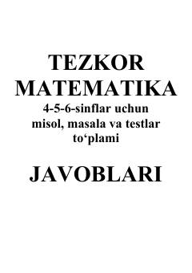

TM4-5-6-sinflar uchun mo'ljallangan tezkor matematika testlari va masalalari javoblar to'plami.
Ushbu qo'llanma 4, 5 va 6-sinf o'quvchilari uchun mo'ljallangan tezkor matematika darsliklari va testlar to'plamining javoblarini o'z ichiga oladi. Unda turli mavzular bo'yicha takrorlash darslari va hisoblash ko'nikmalarini baholash testlarining kalitlari keltirilgan.